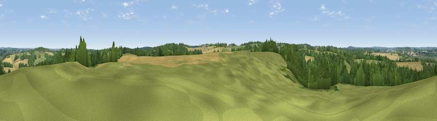

Viewpoint near Ewhurst Green
#38741 in England · top 40% of its area beats it · near Ewhurst Green · access?Where it is
The exact computed spot (TQ 81125 23475). Click the marker for map links.
Public access: no public right of way or access land is recorded at this exact spot — it may be on private land. Computed from Natural England's CRoW access layer and OpenStreetMap rights of way — not the legal definitive map. Always verify locally.
The view, rendered

A 360° render of this exact spot computed from the terrain model, tree cover and land cover — summer colours, afternoon light, calibrated against photographs of famous viewpoints. Real trees, hedges and buildings will differ in detail.
The panorama
Grey silhouette: terrain skyline in each direction (720 bearings, Earth curvature and refraction included). Dashed green: skyline with trees (+15 m) and buildings (+8 m) as obstacles. Blue strip: how far the ground is visible on each bearing.
Where the view opens
Wedge length = distance to the farthest visible ground on that bearing (vegetation-aware). Rings at 10, 25 and 50 km.
What fills the view
39% grassland · 37% woodland · 23% cropland ·
Angular shares of the visible panorama (visual magnitude), not map area. Landscape diversity 0.48 (0–1 Shannon).
Key numbers
More beautiful places nearby
The staircase of upgrades: each row has a higher view potential than everything closer. Driving times are estimates from straight-line distance, calibrated against real road routing — check an actual route before setting out.
| Place | Direction | Drive | Score |
|---|---|---|---|
| Viewpoint near Staplecross | W · 3 km | ~7 min | 37.4 |
| Viewpoint near Beckley | ENE · 5 km | ~10 min | 42.4 |
| Viewpoint near Udimore | ESE · 9 km | ~18 min | 59.7 |
| Viewpoint near Telham | SSW · 10 km | ~19 min | 62.2 |
| Viewpoint near Three Oaks | S · 11 km | ~21 min | 69.3 |
| Viewpoint near Guestling Green | SSE · 12 km | ~23 min | 72.2 |
| Viewpoint near Fairlight | SSE · 13 km | ~23 min | 74.5 |
| Viewpoint near Fairlight | SSE · 13 km | ~23 min | 75.1 |
50.98219, 0.57899 · source: screening · position refined by local search. Computed location — check access rights before visiting.